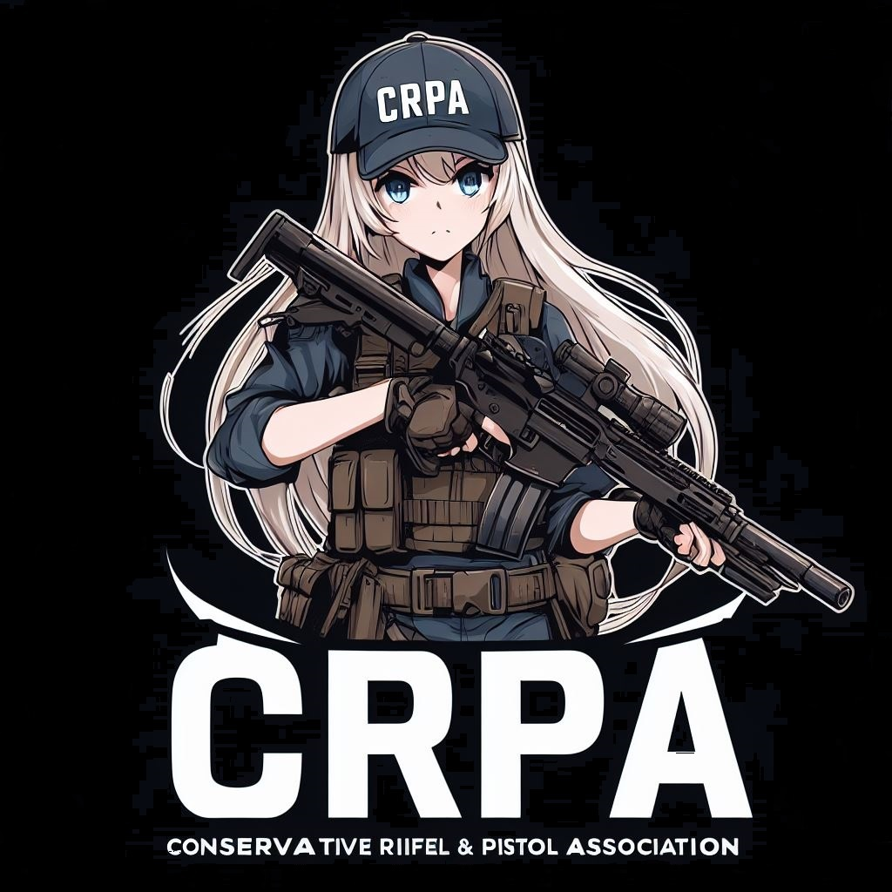

¿Cómo fue la creación de esta página?
Esta página inició como proyecto de un a isntitución educativa, en la materia de Formación Elemental Para el Trabajo V. Gracias a ello, me interesé más en la programación e Informática, aunque ya me había acercado a esto anteriormente: Cursos de Informática e Inglés, Aplicaciones de programación para dispositivos móviles y en la materia de informótica en el primer año de preparatoria, sin embargo, en esas ocasiones, esto no me llamaba mucho la atención.
Actualmente (15/10/2023), actualizo el código de la pácina de vez en cuando(Agregando Información, códigos o etiquetas, tratando de mejorarla estéticamente y aprendiendo otros lenguajes de programación, como lo son Java y php, al igual que mejorando otros, como JavaScript. También estoy tratando de entender lo de modificar la base de datos, ¿Por qué?. Mi primer objetivo es crear un botón en donde se pueda dar un solo click por persona, lográndose gracias a que su dirección ip queda guardada en la base de datos de la página (o eso pienso), esto para que la persona que ingrese a la página pueda "deja su huella", como de hacer saber que estuvo ahí.
Trataré de convertir esta página en un tipo de foro, pero probablemente esto sea muy complicado, y talves no pueda lograrlo sin invertir dinero. Si ese no puede ser el caso, puedo hacer una tienda en linea, namás toy alucinando XD. No se qué haré exactamente con esta página, lo pensaré en el futuro. Por el momento, esto quedará así.
Le he dedicado mucho tiempo a esta página, agregando y modificando varias cosas, pensando qué otras cosas podría agregar, aunque talvés abandone este proyecto dentro de un buen tiempo, o hasta que termine la preparatoria.
